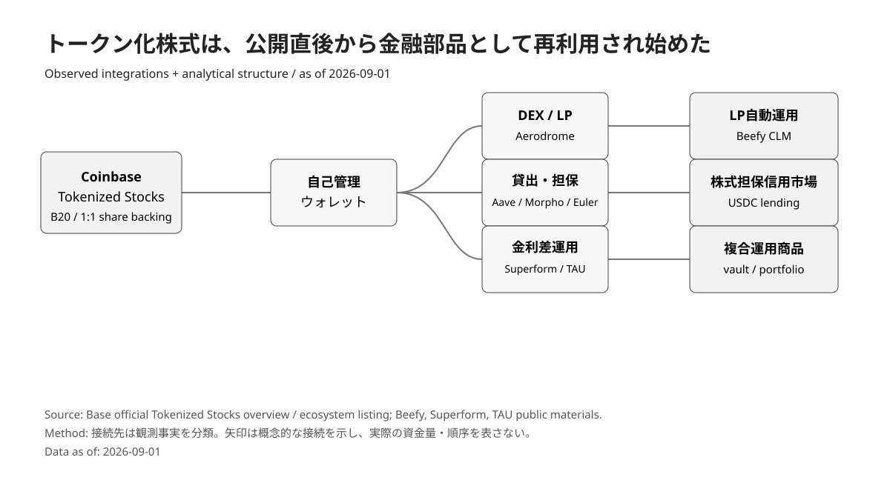
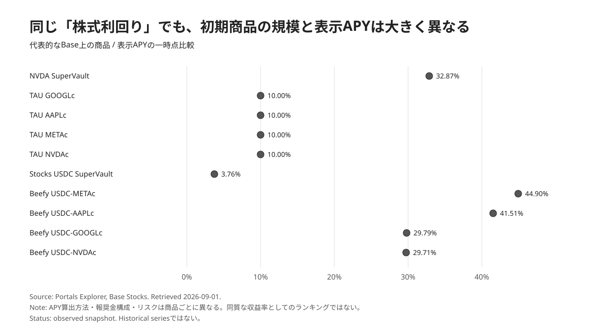

Summary
Coinbase Tokenized Stocks went live on Base on 2026-08-24. The important development is not simply that tokens representing shares such as NVIDIA and Apple can trade around the clock.
A second layer began forming almost immediately: products using those equities as collateral, lending assets, LP inventory, carry-trade inputs and components of managed vaults. Base's official ecosystem page lists Aerodrome, Aave, Morpho, Euler, Beefy and Superform among the protocols supporting or integrating tokenized stocks, explicitly positioning equities as assets that can be put to work across DeFi.
A Portals Explorer snapshot retrieved on 2026-09-01 showed the NVDA SuperVault at 32.87% APY and roughly $122.9K TVL. TAU's GOOGLc, AAPLc, METAc and NVDAc carry vaults each displayed 10.00%, with TVLs of roughly $7.1K–$14.7K. Beefy tokenized-stock / USDC LP products displayed rates ranging from 29.71% to 44.90%.
Reading those figures as “hold NVIDIA and earn 30%” would be a category error.
The experiment is not a sudden increase in equity dividend yield. It is the conversion of equity exposure into a programmable DeFi capital primitive.

1. Tokenized stocks do not end at 24/7 trading
Base states that Coinbase Tokenized Stocks are backed 1:1 by actual shares held in regulated, bankruptcy-remote custody. Holders own B20 tokens representing beneficial claims on those shares.
The products are available only in eligible jurisdictions outside the United States, but once issued, the B20 tokens can move into self-custody and interact with DeFi. Base's official ecosystem listing includes Aerodrome, Aave, Morpho, Euler, Beefy and Superform among the relevant venues and integrations.
That is where the economic difference from a traditional brokerage account becomes important.
A NVIDIA share in a conventional brokerage account is primarily an asset to hold, sell or lend through the broker's infrastructure.
Onchain NVDAc can potentially move through a sequence such as:
NVDAc
→ collateral
→ stablecoin borrowing
→ carry strategy
→ liquidity provision
→ managed vaultTokenization becomes more consequential after issuance, when the asset begins functioning as an input into other financial contracts.
2. An early experiment: NVDA SuperVault
Superform's NVDA SuperVault is one of the earliest examples.
Portals Explorer showed 32.87% APY and approximately $122.9K TVL on 2026-09-01. Snapshots only days earlier also showed APYs in the 30% range and TVL around $100K, illustrating how quickly the figures can move in a newly launched market.
Superform describes the initial strategy as a USDC carry structure built around tokenized NVIDIA exposure. NVDAc is used as collateral, USDC is borrowed, and capital is deployed when the net carry remains positive. LTV is managed as the equity price moves and debt can be reduced when necessary.
The displayed APY therefore does not come from NVIDIA's dividend.
At minimum, the return needs to be decomposed into:
- lending / borrowing spread
- leverage
- launch incentives
- USDC rewards
- UP / sUP rewards
The current 30%+ figure cannot be extrapolated as a long-run equity yield.
3. Much smaller markets are already appearing
On 2026-09-01, Portals Explorer showed TAU's GOOGLc, AAPLc, METAc and NVDAc carry vaults at 10.00% APY. TVL remained extremely small: roughly $10.3K for GOOGLc, $11.6K for AAPLc, $7.1K for METAc and $14.7K for NVDAc.
TAU described itself as a day-one launch partner and announced the four carry vaults through IPOR Fusion.
Beefy, meanwhile, launched concentrated-liquidity vaults built on Aerodrome tokenized-stock / USDC pools. Beefy's own launch materials describe three overlapping incentive layers: Aerodrome emissions, USDC incentives supplied by Coinbase through Merkl, and Beefy's own reward boosts.
Portals Explorer displayed 44.90% for Beefy USDC-METAc, 41.51% for USDC-AAPLc, 29.79% for USDC-GOOGLc and 29.71% for USDC-NVDAc on 2026-09-01.

These are not mature yield markets. What matters is how quickly a financial stack began to appear: spot trading was followed within days by collateral use, lending, carry strategies, LP products and managed vaults.
4. Lending to stock-backed borrowers instead of buying the stock
The USDC side of the market is equally important.
Superform's Stocks USDC SuperVault is designed to supply USDC into markets where tokenized equities are used as collateral, earning interest from borrowers. Superform's public material has promoted yields of up to 8%, while Portals Explorer displayed 3.76% APY and roughly $1.47K TVL when retrieved on 2026-09-01.
That difference itself is a reminder that headline rates in an early market are not fixed properties of the product.
Economically, the position differs from owning NVIDIA exposure.
Instead of:
capture NVDA upsidethe exposure becomes:
investors want to borrow against NVDA and other stock collateral
→ supply USDC
→ earn interestIf tokenized-stock markets expand, an equity-backed credit market could develop as a market distinct from the equities themselves.
5. The important question is not the highest APY
In a new market, the largest number naturally attracts attention.
The more useful questions are structural:
- How much of APY comes from borrower interest?
- How much comes from trading fees?
- How much is temporary incentive?
- How much leverage is embedded?
- Where is the liquidation threshold?
- What can the vault manager change?
- How long does exit take?
- What yield remains after incentives end?
Beefy's launch is particularly instructive because its own materials describe three simultaneous incentive layers. A large portion of a headline APY may therefore reflect market-bootstrapping subsidies rather than the economic yield of the equity itself.
The significance of tokenized-stock yield is not that “stocks now have high APYs.”
It is that equities have become programmable collateral on top of which new financial products can be assembled rapidly.
During the 2021–2022 DeFi cycle, successful protocols were often followed by waves of forks.
The pattern visible in 2026 is different: mature protocols, tokenized real-world assets, price infrastructure, lending markets, DEXs and vaults are increasingly being assembled as components of new financial machines.
Coinbase Tokenized Stocks may be supplying a large new raw material to that composition cycle.
Evidence / Sources
- Base,
Stocks just got updated, accessed 2026-09-01: B20 structure, 1:1 share backing, regulated bankruptcy-remote custody, self-custody and DeFi composability. - Base, Stocks registry / ecosystem listing, accessed 2026-09-01: NVDAc / METAc / AAPLc / GOOGLc and participating venues including Aerodrome, Aave, Morpho, Euler, Beefy and Superform.
- Beefy,
Coinbase Tokenized Stocks: As Markets Converge, 2026-08-24: Aerodrome CLMs and three launch incentive layers involving Aerodrome, Coinbase / Merkl and Beefy. - Portals Explorer, Base Stocks, accessed 2026-09-01: NVDA SuperVault 32.87% / approximately $122.9K, TAU vaults at 10.00%, Stocks USDC SuperVault at 3.76%, and displayed APYs for Beefy stock LP products.
- Superform / SuperStocks public materials: NVDA SuperVault USDC carry structure and Stocks USDC SuperVault equity-collateral lending.
- TAU Labs / IPOR Fusion public materials: launch of GOOGLc / AAPLc / METAc / NVDAc carry vaults.
Figures
- scmr-20260901-005-fig01 — analytical diagram showing B20 equities connecting to DEXs, lending, carry strategies, LP management and vault products. - scmr-20260901-005-fig02 — data figure comparing displayed APYs for selected early products as of 2026-09-01.
publication/sc-markets-research/figures/scmr-20260901-005/- Figures follow Figure Contract / Design System v0.1. Figure 02 source data is stored as CSV.
Assumptions, limitations and falsification
- APY / TVL figures are short-term observations around 2026-09-01 and do not represent permanent yields.
- Portals Explorer is an aggregator; final product terms must be verified against the relevant protocol interface and contracts.
- APY methodologies and incentive inclusion differ by product, so Figure 02 is not a ranking of economically equivalent returns.
- Beefy's launch APYs include overlapping Aerodrome, Coinbase and Beefy incentive programs.
- Tokenized-stock availability varies by jurisdiction and venue. Base describes Coinbase Tokenized Stocks as available in eligible jurisdictions outside the US.
- Issuer, custody and legal risks exist separately from the DeFi protocol risks layered above the tokenized equities.
- If TVL, trading activity and borrowing demand collapse after incentives end, the thesis of durable new market formation should be weakened.
- If collateral use, borrowing, LP activity and new product formation persist after incentives decline, the interpretation of tokenized equities as emerging DeFi primitives becomes stronger.
Disclosure
This article examines market structure and does not recommend investment in Coinbase Tokenized Stocks, NVDAc, AAPLc, METAc, GOOGLc, Superform, TAU, Beefy or any related financial product or protocol. The author and publisher have no disclosable conflict of interest relating to the subjects of this article.